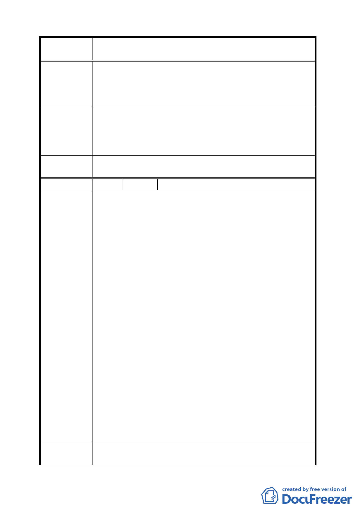

案
名
擬定臺北市中正區齊東街保存區及日式宿舍風貌保
存特定專用區細部計畫案
經濟，自明性更強，吸引創意人才及活力更大。
五、 周邊各區塊的機能應具互補作用，相關防災、交通、
停車、商業、住宅等規劃應適度調整，形成相互支援
關係。
周邊土地使用之建議意見，請市府參考。
專案小組
審 查 結 論 至於對本地區歷史建築使用構想，原則樂觀其成並請更多
元、廣度經營。
委 員會決 議 依專案小組審查結論辦理。
編 號 5 陳情人 李廣武
一、 就歷史層面而言，齊東街為自清朝、日治到光復後一
直為臺北市民津津樂道的一條著名的「米道」，見證
了臺北市 260 年來的發展里程，歷史豐富、發人省思，
為打造臺北市成為文化城市的顯著地標之一，值得善
加保護。
二、 以保護生態環境而言，齊東街古蹟區內，古樹聳天、
枝葉茂盛，為許多鳥類及昆蟲的最佳棲息之地，現有
鳥類及樹木品種，據專家調查，即各有十多種以上，
為臺北市其他地區所罕見，值得市府當局大力保護，
除具有觀賞意義外，尚極富教學價值。
三、 以經濟意義而言，臺北市近年來發展迅速，加上人口
陳情理由
日增，與其他國際城市相比，明顯感覺綠地面積少的
可憐，故被外人稱為「水泥城市」實不為過，因此如
何善用碩果僅存的少數綠地，應列為當前市政推行的
首要考量，因此將華山社區（包括華山創意園區、齊
東街古蹟保存區孫運璿先生故居以及李國鼎先生故
居等）合併規劃並開發為臺北市的一處文化園區，不
但可吸引遊客，增加觀光收入，並可帶動附近地區的
商機，經濟效益不可限量。
四、 以都市發展多元而言，將中正區打造為臺北市政治、
文化及教育為特色的社區，不但可令人對臺北市的市
貌有一新耳目之感，亦能展現臺北市身為首都的氣
派，一如美國首都華盛頓特區給人的感覺一般。
建議辦法
一、 將「齊東街古蹟保存區」與「華山創意園區」兩案配
合規劃，共同開發，因「華山創意園區」地點適中，
9